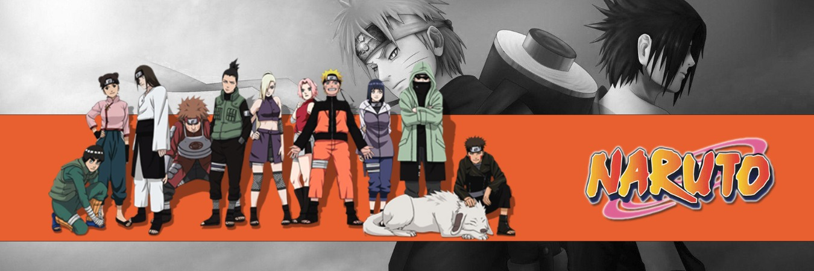
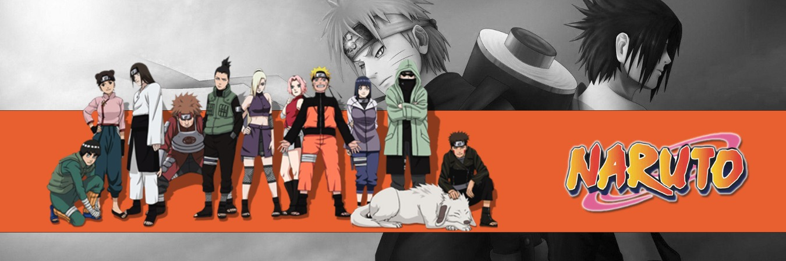
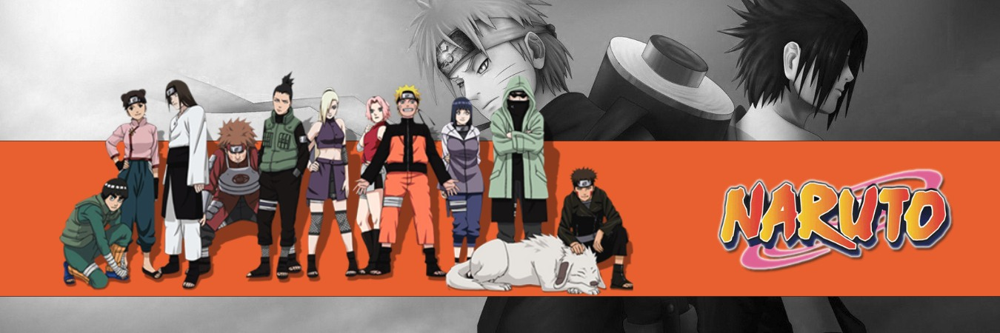
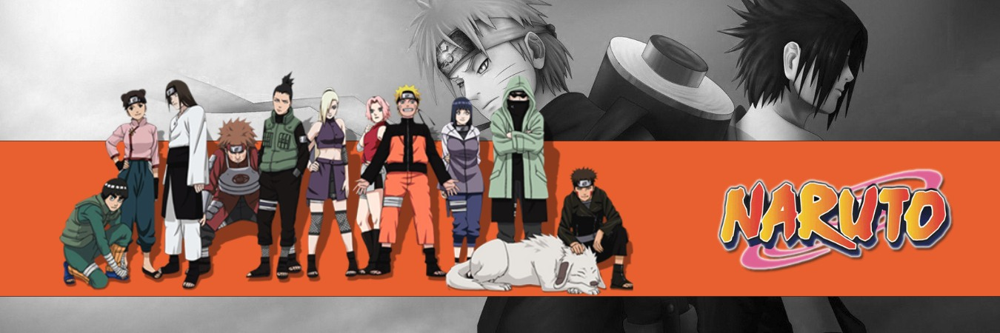

It tells the story of Naruto Uzumaki, a young ninja who seeks recognition from his peers and dreams of becoming the Hokage, the leader of his village.As a child, Naruto was neglected and was only acknowledged as a monster and a demon boy who shouldn't be alive, let alone a Shinobi. He grew up without any parents, without the love of another person. In fact, Naruto has been entirely alone his entire life. So, it's no wonder he is always reaching out for people's attention. He always wanted someone to look at him and acknowledge his existence, even at the expense of his reputation and education. From his dejection, Naruto grew up to have a dream that he would devote his life to, no matter what happened. That dream was to be the Hidden Leaf Villages Hokage and have everyone acknowledge Naruto as the Villages best and strongest Ninja. A very difficult dream to accomplish, especially when he had nobody to support his ambition or to help him believe he could be anything he wanted. Until, he found that in his sensei, Iruka. Iruka had a very similar childhood to Naruto and he understands the shadow of pain Naruto lives under. As time passed, Naruto found two more people who he would fight beside with. His rival, Uchiha Sasuke and his love interest, Haruno Sakura. These are the two people who mean the most to Naruto from very different reasons.

The Uchiha clan was one of the most revered clans in the Naruto universe. Powered by the Sharingan, members of the clan have a reputation for becoming masterful shinobi. Itachi is one of the clan's most notorious members. He was one of the series' most impactful characters. Even before his debut, fans were intrigued by him because Sasuke vowed to get revenge on him.
The interest surrounding him only grew after he appeared for the first time. Fans were excited by his dark, mysterious presence. Though he was initially introduced as a villain, his actions weren't ill-intentioned. If the story panned out differently, Itachi was powerful enough that he could have become Hokage.
Jiraiya was one of Konohagakure's Sannin. Famed as a hermit and pervert of stupendous ninja skill, Jiraiya travelled the world in search of knowledge that would help his friends, the various novels he wrote, and, posthumously, the world in its entirety knowledge that would be passed on to his godson and final student, Naruto Uzumaki.
As a shinobi that has gone through wars, fought countless battles, and square off against unfathomable opponents, one would assume Jiraiya to be battered and bruised, right? Well, apparently not, and when lifting his shirt to reveal to Tsunade a recently acquired scar, it was the only one on his entire body.
Kakashi Hatake (Hatake Kakashi) is a shinobi of Konohagakure's Hatake clan. Famed as Kakashi of the Sharingan (Sharingan no Kakashi), he is one of Konoha's most talented ninja, regularly looked to for advice and leadership despite his personal dislike of responsibility. To his students on Team 7, Kakashi emphasises the importance of teamwork; he himself received this lesson, along with the Sharingan, from his childhood friend, Obito Uchiha. After the Fourth Shinobi World War, Kakashi becomes Konoha's Sixth Hokage (Rokudaime Hokage, literally meaning: Sixth Fire Shadow).
Kakashi graduated from the Ninja Academy and became a Genin, when he was merely 5 years old, then at 6 years old, became a Chuunin. He later became a Jounin and a member of the AnBu Assasination squad for Hidden Leaf Village. We see him as he takes up the role as being a sensei for the new Chunnins.
Naruto, Sasuke, and Sakura were organised into a team following their graduation from the Academy in order to balance out their talents: Naruto, the worst student in his class, would benefit from Sakura's intelligence and Sasuke's proficiency with ninjutsu; Sakura would benefit from her more battle-capable teammates; Sasuke would benefit from being forced to work with others. Kakashi was selected to lead them in order to keep an eye on Naruto, Nine-Tails' jinchūriki and, in the anime, to help Sasuke cope with life after the Uchiha Clan Downfall, and as well to develop his Sharingan. As with all the previous genin teams he was put in charge of, Kakashi gives them a bell test in order to determine if they give the proper importance to teamwork. Unlike all previous genin teams, Naruto, Sasuke, and Sakura pass the test.
Sasuke Uchiha (Uchiha Sasuke) is one of the last surviving members of Konohagakure's Uchiha clan. After his older brother, Itachi, slaughtered their clan, Sasuke made it his mission in life to avenge them by killing Itachi. He is added to Team 7 upon becoming a ninja and, through competition with his rival and best friend, Naruto Uzumaki, Sasuke starts developing his skills, but eventually grows dissatisfied with his progress. He defects from Konoha so that he can acquire the strength needed to exact his revenge and master the Cursed Seal of Heaven. His years of seeking vengeance and his actions that followed become increasingly demanding, irrational and isolates him from others, leading him to be branded as an international criminal.
After learning the truth of his brother's sacrifice, later proving instrumental in ending the Fourth Shinobi World War, and being happily redeemed by Naruto, Sasuke decides to return to Konoha and dedicate his life to help protect the village and its inhabitants, becoming referred to as the "Supporting Kage".
Sakura Uchiha (Uchiha Sakura, née Haruno ) is a kunoichi of Konohagakure. When assigned to Team 7, Sakura quickly finds herself ill-prepared for the duties of a shinobi. However, after training under the Sannin Tsunade, she overcomes this, and becomes recognised as one of the greatest medical-nin in the world.
Sakura remains one of the most recognizable characters in Naruto thanks to her iconic pink hair, immense physical strength, and proficiency in the healing arts. As a member of Team 7, Sakura joined the likes of Hokage Naruto and her future husband Sasuke in saving the world against the Otsutsuki threat in the Fourth Great Ninja War.
Madara Uchiha (Uchiha Madara) was the legendary leader of the Uchiha Clan. He founded Konohagakure alongside his childhood friend and rival, Hashirama Senju, with the intention of bringing about an era of peace. When the two couldn't agree on how to achieve that peace, they fought for control of the village, a conflict which ended in Madara's death. Madara, however, rewrote his death and went into hiding to work on his own plans. Unable to complete it in his natural life, he entrusted his knowledge and plans to Obito shortly before his actual death. Years later, Madara would be revived, only to see his plans foiled and ultimately, and finally, realising the error of his ways and making amends with Hashirama before his final death.
Madara was one of the most powerful shinobi in history, recognised as the strongest Uchiha in his lifetime and for decades after his death. A child prodigy, he killed several adult Senju before he had awakened his Sharingan.[53] History remembers him as the only one able to compete with Hashirama Senju, a "God of Shinobi", and pushed him to his absolute limits. When Obito operated under Madara's name, fear of Madara's power forced the Five Great Shinobi Countries, and the neutral Land of Iron, to band together and trigger the Fourth Shinobi World War, as it was noted Madara's name itself was power. After his return from death and various enhancements, Madara was able to decisively defeat thousands of shinobi, the Five Kage, and the nine tailed beasts, all at once respectively. Madara was also confident if he had senjutsu chakra, he would have been able to defeat Obito while the latter was the Ten-Tails' jinchūriki.